How People Use ChatGPT and Claude
Data notes · October 2026
OpenAI (through OpenAI Signals) and Anthropic (through the Anthropic Economic Index) now publish aggregate statistics on what people use their chatbots for, by country and over time. I spent some time with both files. These are the patterns that stood out. Everything here is descriptive: the charts show what moved together, not why. The caveats that matter most are collected at the end.
What it is used for
In July 2024, 51.6% of ChatGPT messages were labelled work-related. By September 2026 it was 32.2%. A second, three-way label (work, schoolwork, other) shows where it went. Work fell from 27.3% to about 19% by the end of 2024 and has stayed near there since (21.0% in September 2026). Schoolwork kept falling, from 24.0% to 13.5%. Everything else, mostly personal use, grew from 48.7% to 65.5%.
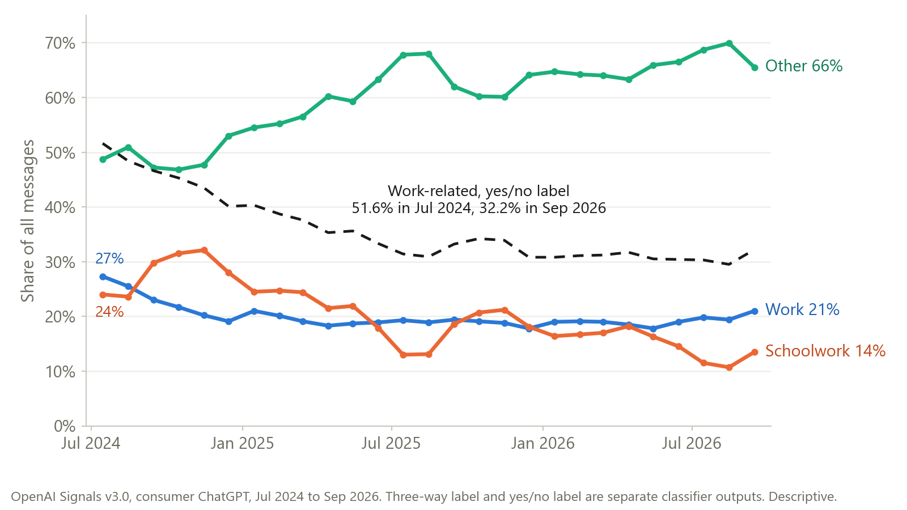
Signals sorts each message into asking (looking for information or advice), doing (getting a task done, such as writing or code), or expressing (sharing feelings or opinions). Expressing went from 11.7% to 29.1% of messages. Doing fell from 42.7% to 33.9%, and asking from 45.7% to 36.9%.
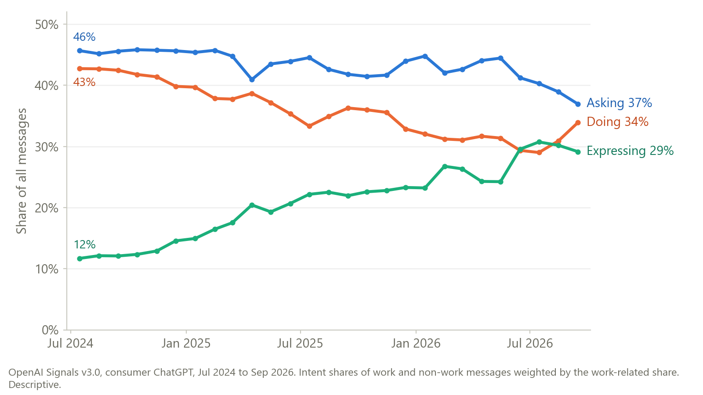
The share of messages from users with typically feminine first names rose from 42% to 52%. It first reached 50% in May 2025 and has stayed above it since September 2025. The rise is not driven by a few large countries: the share went up in all 126 countries observed throughout, and the number of countries above 50% went from 14 to 89. Gender here is inferred from first names, not reported by users.
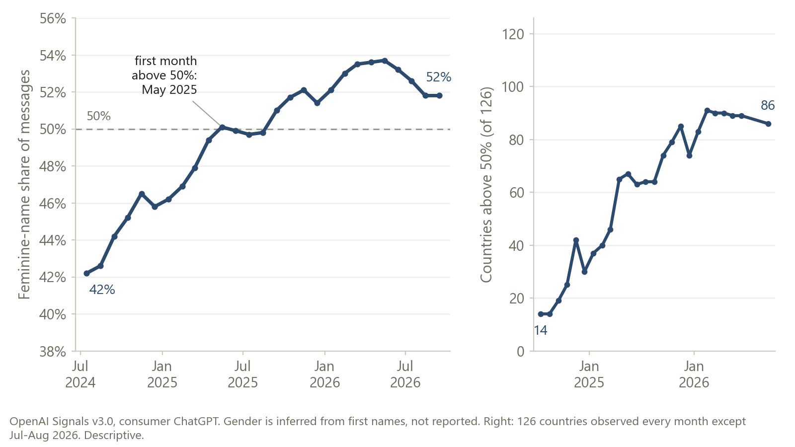
Signals also labels each work message with an O*NET work activity. Across the 74 countries observed in every quarter, the median share of work messages about programming fell from 7.6% (2025 Q1) to 2.9% (2026 Q2), and it fell in all 74. Creating visual designs moved the other way, from 3.0% to 6.4%, rising in 73 of 74. One reading is that coding moved to dedicated tools (Codex, Claude Code, Cursor) that these files do not cover. The data cannot show who moved.
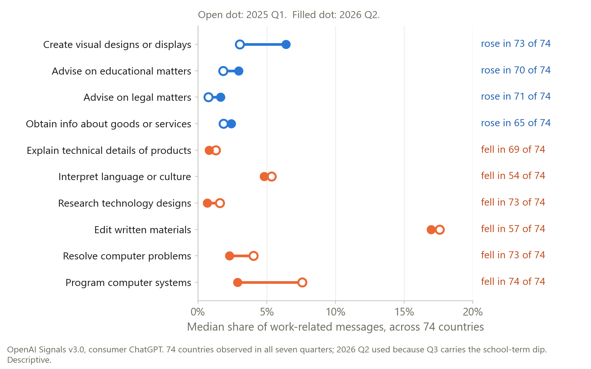
Calendars in the data
Relative to each country's own trend, the work share in seven southern-hemisphere countries drops by about 11% in December and 9% in January, their summer break. Northern countries show small dips in June and August and a rise in September and October. Summer holidays mix school and work leave, so this cannot tell the two apart.
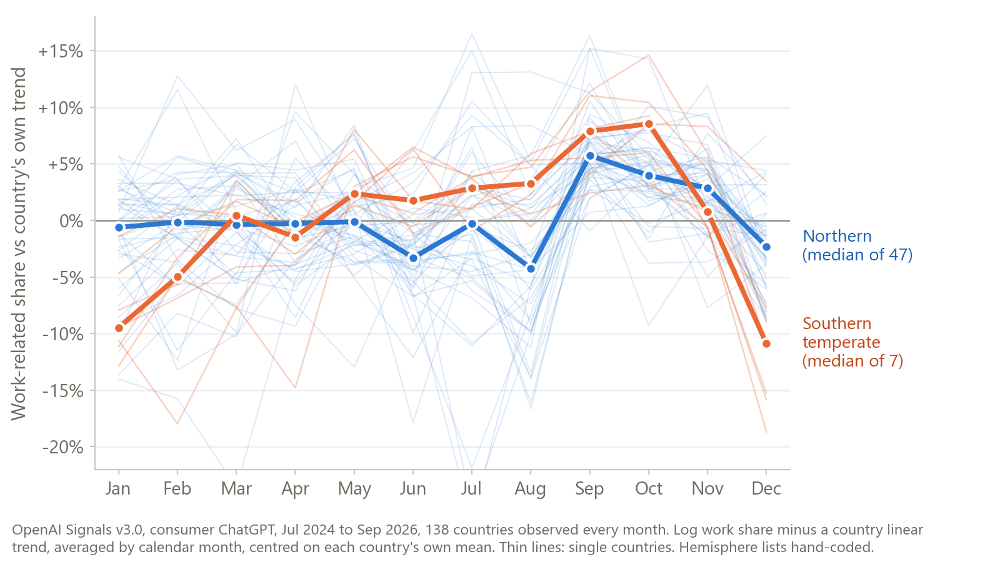
In South Korea, Vietnam, Taiwan and Singapore, the work share is lower in whichever month holds Lunar New Year (January in 2025, February in 2026), compared with 141 other countries: by 3.2 percentage points on average. Random groups of four countries rarely show a gap that large (p = 0.001). Most of it comes from February 2026; the 2025 holiday straddled the two months.
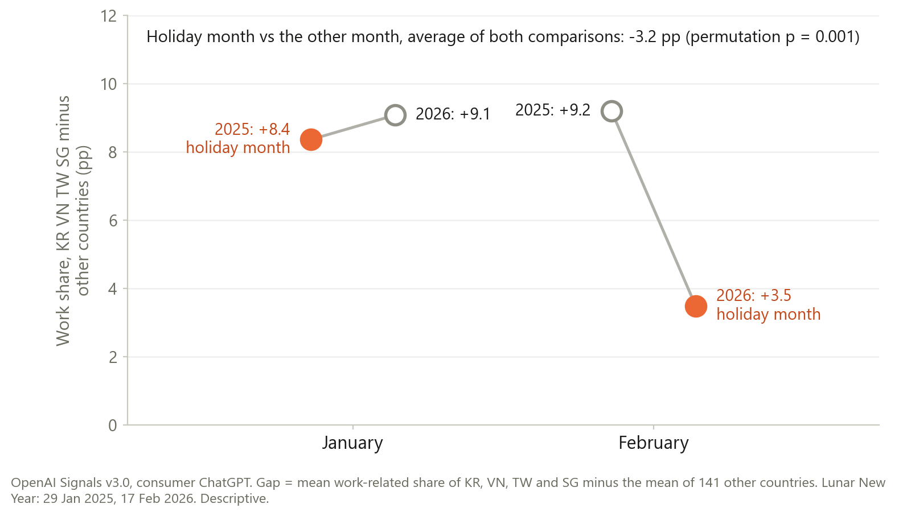
Countries
Between 2025 Q1 and 2026 Q3, South Korea moved from 67th to 24th in ChatGPT use per person, and Japan from 113th to 62nd. Japan's 51-place climb was the second largest of any country, after Azerbaijan (85), and Korea's 43 the third. Taiwan went the other way, from 48th to 67th, and the US moved from 40th to 49th.
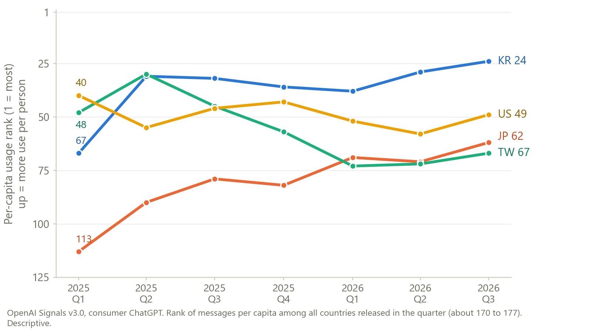
Google search interest in ChatGPT is higher in poorer countries (rank correlation with GDP per person −0.52, 94 countries). Actual use per person runs the other way (+0.90, 165 countries). Search interest is relative to all searches in a country, so it partly measures novelty. Changes in search interest do track changes in use, but its levels are a poor stand-in for adoption.
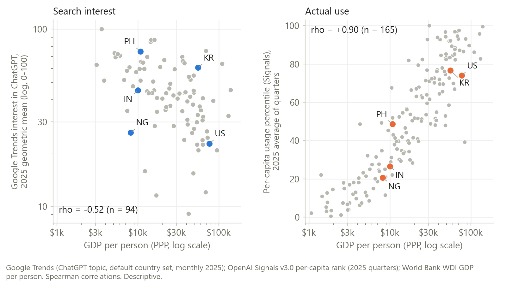
Across 127 countries, the share of ChatGPT messages from users with feminine first names (April to June 2026) is higher where women hold more political power, as measured by V-Dem's women's political empowerment index: rank correlation +0.47, and +0.38 after accounting for GDP per person (about the same within world regions). Part of it overlaps with older user bases: holding the average user age fixed as well, it is +0.27. Afghanistan has the lowest score on the index, and about 30% of its messages come from feminine-name users. Women's labour force participation shows no clear link (−0.14 after GDP, not significant), so the pattern does not simply follow women's paid work.
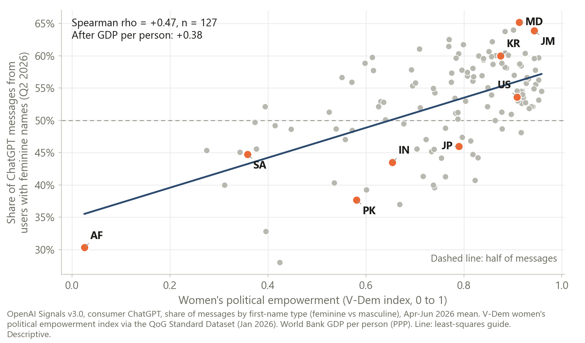
Claude and ChatGPT
Across 121 countries, Claude use per person and ChatGPT use per person line up closely (rank correlation 0.91). Relative to their ChatGPT position, the US (+33 percentile points), Italy (+28), New Zealand (+26), Taiwan (+23) and Japan (+21) lean toward Claude. Azerbaijan is the largest outlier the other way (−69).
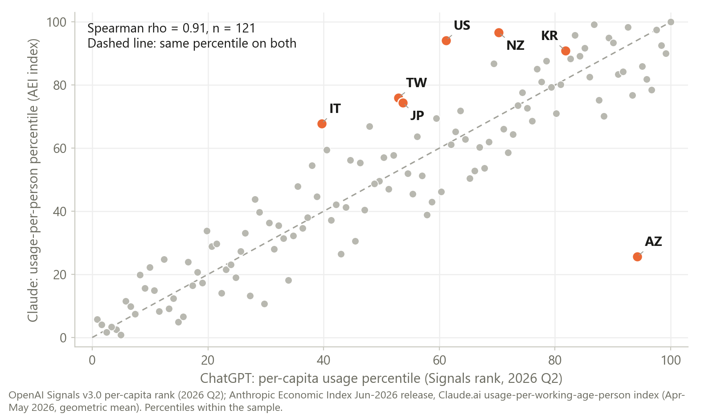
Claude use per working-age person is higher in countries with a freer press: rank correlation +0.61 across 117 countries (Reporters Without Borders index), and +0.54 after accounting for GDP per person. It holds within the high and upper-middle income groups. Lower corruption (+0.49) and higher PISA scores (+0.46) point the same way after GDP. These measures are correlated with one another (about +0.6 to +0.8), so read them as one broad pattern. ChatGPT use also rises with press freedom, but much less: on the same 110 countries it is +0.21 after GDP, against +0.54 for Claude (the 95% interval for the gap runs from 0.14 to 0.50). Claude.ai is not offered in some countries, but none of them are in this sample, so availability does not explain it. Singapore is the clear exception: among the highest Claude use, with a low press-freedom score.
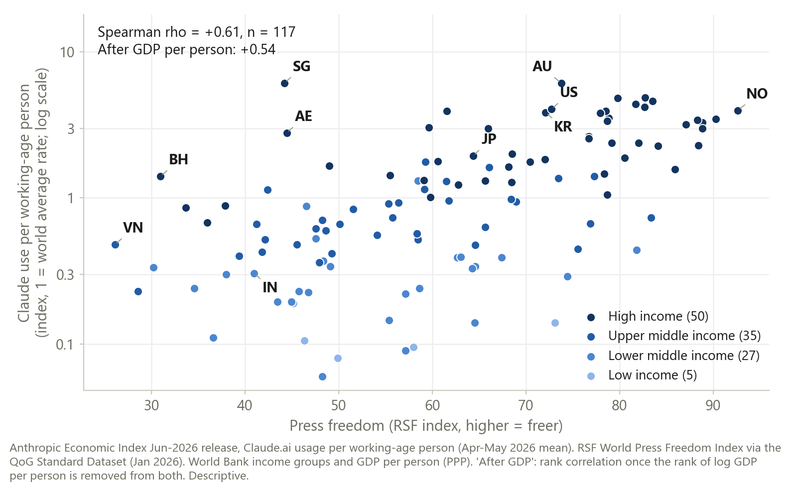
Data and caveats
- Shares, not counts. Signals publishes shares of messages and per-capita ranks, never message volumes. A falling share can mean less of one thing or more of everything else.
- Consumer ChatGPT and Claude.ai only. Signals covers consumer ChatGPT plans, and the Anthropic country files cover Claude.ai conversations. Claude Code and Codex are in neither.
- Labels come from classifiers. Work, intent and activity labels are assigned by language models, and Signals adds differential-privacy noise, which matters most for small countries and small categories.
- Gender is inferred from first names, not reported by users.
- Per-capita ranks are fragile at the top. Places with fewer than 100,000 working-age residents (Seychelles, Monaco, American Samoa) have each ranked first in some quarter.
- Nothing here is causal. Every pattern is a correlation in aggregate data.
- The two governance comparisons were set up in advance. Press freedom and women's political power were among 16 cross-country comparisons I wrote down before computing any of them. Both pass a correction for testing many comparisons at once. The ChatGPT comparison and the user-age check in those two sections were added afterwards.
- All numbers are my own calculations from the public files, and any errors are mine.
More data: OpenAI's own Signals page shows many more series interactively, including breakdowns by country, age group, plan and US state.
OpenAI Signals. Chatterji, Cunningham, Deming, Hitzig, Johnston, Martin Richmond, Ong, Shan and Wadman (2026), OpenAI Signals v3.0, OpenAI, openai.com/signals/data-download. Licensed under CC BY 4.0; the charts and derived numbers are mine.
Anthropic Economic Index. Country-level Claude.ai data from the June 2026 release, huggingface.co/datasets/Anthropic/EconomicIndex. Data released under CC-BY.
Google Trends. Data source: Google Trends (https://www.google.com/trends).
O*NET. This page includes information from the O*NET 31.0 Database by the U.S. Department of Labor, Employment and Training Administration (USDOL/ETA). Used under the CC BY 4.0 license. O*NET® is a trademark of USDOL/ETA. Wonwoo (William) Kim has modified all or some of this information. USDOL/ETA has not approved, endorsed, or tested these modifications.
Quality of Government. Press freedom (Reporters Without Borders, World Press Freedom Index), women's political empowerment (V-Dem) and corruption (Transparency International, Corruption Perceptions Index), all as included in Teorell, Sundström, Holmberg, Rothstein, Alvarado Pachon, Saidi Phiri, Chen and Liu (2026), The Quality of Government Standard Dataset, version Jan26, University of Gothenburg: The Quality of Government Institute, doi:10.18157/qogstdjan26.
Other sources. World Bank, World Development Indicators (GDP per person, PPP) and income groups. OECD (2023), PISA 2022 Results (Volume I): The State of Learning and Equity in Education, OECD Publishing, Paris.